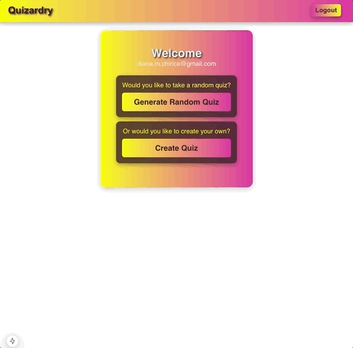
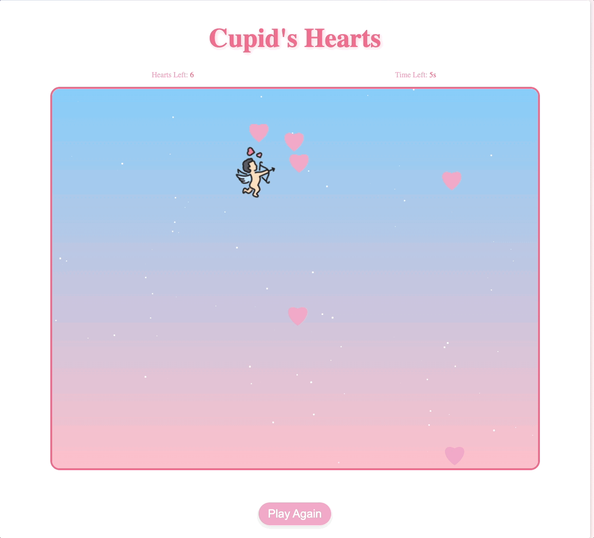
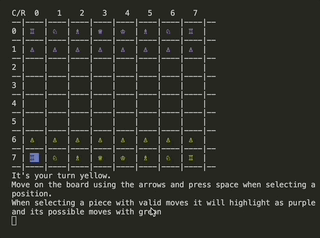

About Me
Full-stack engineer at Lickd, working across React, TypeScript, and Ruby on Rails. I like problems that sit between product and infrastructure — schema design, real-time UX, the kind of thing that quietly falls apart at scale. Outside of work I build tools I'd want to use myself: a long-distance couples app, a budgeting app that takes ADHD friction seriously. Based in London.

Ruby | TypeScript | JavaScript | SQL | HTML&CSS | Git
React | Redux | Next.js | Rails | Rspec | AWS S3 | jQuery | Axios | PostgreSQL | WebSockets | Tailwind
Projects
Faebook
Social platform with a Zodiac Academy theme, built with Rails, React, and TypeScript. Real-time chat over ActionCable WebSockets, polymorphic post content with automatic URL preview parsing, image pipeline using ActiveStorage with on-the-fly S3 variants. Backend developed with TDD.

Quizardry
Quiz platform built with Next.js 15 and TypeScript. Google OAuth via Supabase, dynamic question generation by category and difficulty, scoped styling with CSS Modules, animations with Framer Motion.

KDFG
Community hub for K-drama fans, built with React. [PLACEHOLDER: replace this sentence with two specific UI components you built and what was technically interesting about them.]

Cupid Hearts
Asteroids-inspired browser game built with vanilla JavaScript and HTML Canvas. Vector physics for movement, math-based collision detection, sprite rendering.

Console Chess
Terminal two-player chess game in Ruby, built around multi-level inheritance (Piece → SlidingPiece → Rook/Bishop/Queen). Includes board state validation and check/checkmate detection.

Contact Me
Interested in working together or have any questions?